腾讯-WeGR：用协同防坍塌语义 ID 与动态视野优化统一工业搜索召回
- 论文：WeGR: Unified Generative Retrieval for Industrial Search Systems in WeChat
- 作者：Jiajun Han、Guoxin Ma、Felix、Liangsheng Xu、Ruiqi Yu、Yingdi Guo、Zongbing Wang、Xinhua Ye、Chenyan Hua、Xin Xie、Pengcheng Yang、Haijun Wu。
- 机构：Tencent Penguin Island（腾讯）；前 3 位作者共同第一作者。
- 公开时间：2026-10-12，arXiv v1；精读日期：2026-10-15（Asia/Shanghai）。
- 论文入口：arXiv:2610.16979。
- 代码/项目状态：未核验到独立项目或代码入口；实验依赖微信私有业务数据。本笔记依据完整 11 页论文，不宣称复现。
1. 背景和问题
现有语义 ID 编码器难以同时融入协同信号和有效利用码本，而基于完整语义 ID 精确匹配的强化学习奖励过于稀疏，使大量采样轨迹缺少有效学习信号。这句话是论文摘要中两个问题的压缩中文转述。它把生成式召回的难点分成两个相互依赖的阶段：首先，商品能不能被编码为既有语义、又符合用户行为、还足够可区分的离散标识；其次，模型能不能根据真实点击与订单，在这个标识空间中学会用户偏好。若第一阶段把许多商品挤到少数码字，第二阶段即使优化得很好，也只能在失真的候选空间里工作；若第二阶段绝大多数采样都得零奖励，更好的编码也不会自动转化为更好的排序。
微信电商搜索的传统链路先用倒排索引、向量近邻等多个渠道产生候选，再合并送入预排序、排序和重排。每个渠道要维护不同的检索逻辑、配额、索引和服务能力，而合并之后的候选规模又决定下游逐商品特征处理与模型打分的成本。这种架构的优势是各渠道可以专门处理关键词精确命中或相似语义等需求，代价是召回质量和系统资源分散在多个环节。WeGR 的目标是把一部分候选生成统一成自回归的 SID 生成接口，以查询及用户历史为条件直接预测商品标识，并用更好的候选减少下游的处理量。论文实际部署保留了传统候选，因此“统一”描述的是生成式建模接口和替代方向，不能理解成已经撤销全部传统检索服务。
SID 是短的分层离散序列，前层通常表达较粗的商品类别或语义簇，后层继续编码残差信息来区分具体商品。与任意商品整数 ID 相比，这种结构让相关商品可能共享前缀，从而为生成模型提供跨商品泛化的机会。与此同时，SID 的好坏不是只看重建误差：两件视觉或文本相似的商品可能对应不同的购买意图，而外观不同的商品也可能被同一用户群共同选择。协同信息描述的就是这类从真实行为中出现的联系。论文同时引入查询到商品和商品到商品的联系，说明搜索场景需要兼顾当前意图和商品间的消费关系，不能只依赖多模态内容向量的接近程度。
已有残差量化有两条主要路线。RQ-Kmeans 先学习商品表示，再逐层聚类，显式控制分配和簇平衡相对容易，但协同目标通常只存在于上游表示学习中，随后聚类未必忠实保留这些关系。RQ-VAE 则把表示、重建和量化放在可学习框架中，便于加入任务监督，但离散的最近邻分配让只有少数码字获得梯度，尤其在热门商品行为占据大部分训练样本时，可能出现长时间不被使用的“死码字”。继续分解残差还可能让后层不均衡扩大。两种路线的优缺点不同，不能直接说端到端量化天然优于聚类；论文需要用同一生成骨干与数据的对照来证明自己的组合设计有效。
偏好优化的瓶颈也有明确的搜索背景。监督微调只最大化历史正例 SID 的生成概率，并不直接比较模型采出的不同商品对用户的价值。强化学习希望给订单比点击更高的奖励，从而把生成概率向高价值候选移动。但商品库规模大，完整的多层 SID 必须逐 token 全部命中用户已点击或下单的商品，采样才得正奖励。一个组里的所有轨迹若都零分，减去组均值后仍全为零，增加优化步数也无法从该组恢复偏好梯度。采样次数增加可能提高偶遇正例的机会，却会提高成本；使用 beam 搜索挑选轨迹又可能改变训练时的采样分布，使策略更新与采样方式不匹配。
另一条常见路线是让现有排序器给更多候选估计 CTR、相关性或综合效用，以此产生稠密奖励。作者担心这些排序器主要训练在已有召回链路的候选上，生成模型探索的中长尾商品可能超出其熟悉分布，结果是有分数但未必可信。跨业务场景还要重新组合启发式奖励和模型，增加适配成本。WeGR 因而选择仍然使用真实行为结果，只在训练早期放宽 SID 匹配的粒度。粗前缀更容易命中，深层逐步恢复精确商品级目标；这要求前缀本身具有行为意义，也解释了为什么 CoCo-VAE 与 DHPO 必须作为关联的两部分来读。
值得关注的是论文使用 GPT-2 Small 作为离线和线上骨干，而不是依靠更大语言模型获得增益。论文的关键问题是离散表示和优化信号是否匹配检索任务，模型规模并不是这里的主要实验变量。它提供了一个工业场景中的具体研究对象：在固定小骨干上改进 SID 和训练方式，能否以较小的离线提升获得可观的在线业务与资源收益。研究者应优先理解这一因果链的证据，而不是从“生成式”三个字推导出语言能力、通用推理能力或大模型规模的结论。
2. 方法
2.1 协同与防坍塌的 SID 编码器
CoCo-VAE 接收商品连续表示，编码后进入多层残差量化，再由解码器重建商品语义表示；产物是每个商品的层级 SID。协同监督引入 Q2I 与 I2I 的 InfoNCE 对比损失，通过带独立投影头的连续表示学习查询—商品与商品—商品共现。论文强调约束施加在编码器连续表示一侧，而不是强迫离散码字直接按照行为共现合并。协同信息负责让连续空间具有行为意义，防坍塌机制负责维持量化空间的容量，两者不能用一个“加对比学习”概括。原文对投影头的分离设计有说明，但没有完整公开网络实现和所有样本构造细节，因此不能把所有参数的梯度路径进一步解释成已经核验的代码事实。
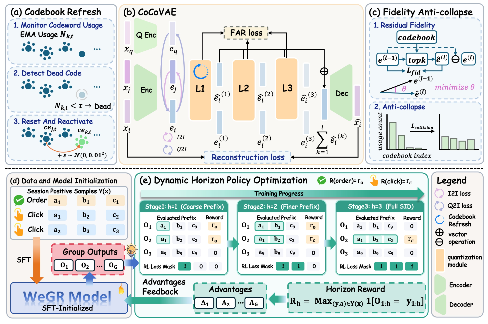
Figure 2 上部按原文方法顺序展示三件事：左侧先监控码字使用率并重新激活不活跃码字，中间把查询和商品的协同信号接到连续编码表示，并经过多层量化与重建，右侧通过残差保真和碰撞约束使更多码字参与学习。右上两种约束具有不同粒度：残差保真在一个样本附近选择若干相关码字，碰撞约束则比较不同样本的软分配重叠。图中这些目标共同作用于 SID 构建，但不能认为所有损失都直接更新同一离散索引。下部先用搜索会话的多个点击与订单正例做初始化，再对模型采出的候选计算阶段化前缀奖励。三阶段窗口对应第一层、前两层和完整 SID，旁边的掩码说明强化学习只优化当前窗口内的 token；下层反馈箭头把组相对优势送回生成模型。整张图说明 SID 不只是训练数据中的标签，它的层次结构还决定强化学习的学习课程。图里的全长监督与前缀策略更新可以并存：MSFT 用已知正例稳定所有位置，DHPO 只给已被行为奖励验证的前缀位置分配信用。
第一层的 Codebook Refresh 维护码字使用次数的指数滑动平均。原文 Eq. 1 可写为： 符号解释：$n_{k,t}$ 是本步分给第 $k$ 个码字的样本数，$N_{k,t}$ 是平滑后的使用统计，$\gamma$ 是衰减系数，$\tau$ 是死码字判定阈值；$j$ 表示较活跃的码字。被判为死码字的向量从活跃向量附近加小噪声重置，以便重新进入可选区域。论文只在第一层执行刷新，因为深层频繁重置会打乱残差分解。这里的机制是训练期维护码本，而不是服务期随机改商品 ID；实现迁移时必须考虑最终码本冻结、商品重新编码与模型词表一致性，论文未提供这些生命周期细节的完整方案。
后层由 Fidelity Anti-collapse Regularization 补足。残差保真选择残差向量余弦相似度最高的若干码字，按相似度形成权重，得到加权表示。原文 Eq. 2 是： 符号解释：$B$ 是批大小，$L$ 是量化层数，$\mathbf e_i^{(l-1)}$ 是第 $l$ 层待量化残差，$T_i^{(l)}$ 是相关码字集合，$w$ 为其权重。传统硬 top-1 只让最近码字获得主要更新，保真目标让多个语义相关码字同时收到梯度，并保持加权表示与残差方向接近。它改善的是梯度覆盖和语义保留，不等于把每个商品最终编码成多个 SID；用于检索的 SID 仍是离散序列。原文没有在实验设置中完整给出 top-k 与所有温度、阈值，因此复现时这些参数需要另行核验。
碰撞正则从不同样本之间的分配重叠入手。将原文 Eq. 3–5 作为同一公式链： 符号解释：$s$ 是残差与码字的余弦相似度，$\beta$ 是 softmax 温度，$M_l$ 是该层码本大小。$p_i$ 是软分配概率，$C_{ij}$ 是两个不同样本分给同一码字的概率重叠。若大量样本集中到少数热门码字，平均重叠会变大，最小化碰撞损失会推动分布扩散。它与保真存在需要调权的关系：只追求均匀可能牺牲语义，只追求保真又可能保留热门簇集中。目标惩罚的是概率集中，不应把它等同于证明完整 SID 的碰撞率为零。
原文 Eq. 6–7 把所有目标收拢： 符号解释：重建损失保持商品语义，Q2I、I2I 是对应协同关系的 InfoNCE，FAR 包含前面两项。论文给出的六个权重依次为保真 0.9、碰撞 1.0、FAR 0.4、Q2I 0.2、I2I 0.05、重建 1.0。因此保真在总目标中的实际乘积系数为 0.36，碰撞为 0.4，不能把内部和外部权重混写成六项相互独立的平面加和。码本三层大小为 16384、128、128；容量是设计空间，不代表每个理论组合都存在对应商品。
2.2 动态视野的课程学习与信用分配
DHPO 用查询与用户上下文条件下的历史正例集合定义奖励。一个搜索会话可以有多个点击或下单商品。完整 SID 命中的原文 Eq. 8 为： 符号解释：$x$ 是会话上下文，$M_x$ 是正例数，$\mathbf y^{(j)}$ 是第 $j$ 个正例 SID，$a^{(j)}$ 是其行为类型。取最大值意味着命中多个共享结构的正例时保留最高行为价值，不是把点击订单奖励累计成任意大的数。对完整序列精确匹配的要求造成初期稀疏性；对数值为零的未命中轨迹，论文没有额外引入排序器评分或语义相似奖励。
原文 Eq. 9–10 逐步改变匹配粒度： 符号解释：$n$ 是优化步数，$\eta$ 是每阶段训练步数，$h$ 是当前视野长度，本文三层 SID 的 $\eta=300$。训练先奖励第一层命中，再要求前两层，最终要求完整三层。行为价值仍来自订单与点击，变的是奖励评估的前缀长度。共享前缀的非正例商品也可能在早期得到奖励，这是一种课程近似，不能把早期奖励当成该商品真实发生了转化。等到 $h=L$，才恢复完整商品级结果奖励。
采样组内相对优势使用当前阶段奖励，对应 Eq. 11： 符号解释：$G$ 为采样组大小，论文取 8，$\delta$ 避免除零。放宽前缀通常增加非零奖励出现的机会，却不保证每个组有奖励差异；全部命中同一奖励或全部未命中时，优势仍退化为零。这解释了后面的 MSFT 为什么是必要补充，也说明 DHPO 是缓解稀疏而非消灭稀疏。阶段长度决定粗粒度训练持续多久，过短可能尚未学到前缀，过长则可能过度强化粗簇，论文未提供广泛的阶段超参数敏感性曲线。
原文 Eq. 12 的策略目标只覆盖 $h$ 个位置： 符号解释：$\rho$ 是新旧策略对该 token 的概率比，$\epsilon$ 是裁剪区间。DHPO 同时扩大“奖励看多长”和“策略改多长”两个视野。如果第一层命中就给整条序列正优势，后面尚未匹配正例的 token 也会被强化，这正是作者要避免的错误信用分配。动态掩码只约束 RL 的显式损失位置，参数共享意味着训练仍可能间接影响其他位置的分布；“只更新前缀 token”不意味着有互不相干的三组网络参数。推理时不使用用户未来点击订单计算奖励，而由完成训练的模型直接生成候选 SID。
2.3 多正例监督微调
MSFT 对会话的全部观测正例做全长 next-token 监督，而不是每次只挑一个正例。原文 Eq. 13： 符号解释：外层平均覆盖不同正例，内层平均覆盖每个 SID 的所有 token。它既保留多个用户兴趣方向，又在采样组没有有效相对优势时继续提供梯度。它与 DHPO 的训练信号来源不同：MSFT 的 teacher forcing 使用已知正例前缀，DHPO 使用策略自己采出的前缀和组内奖励差。共享上下文有多个正例并不意味着模型一次推理必须同时输出全部正例，目标是在条件概率分布中保留多种合理去向。
最后的 Eq. 14 为： 符号解释：0.5 是论文采用的监督正则权重，RL 信号与监督信号共同更新同一生成策略。整个日更训练流程先做 SFT，再做 RL；码本负责提供稳定且行为相关的标签结构，动态视野负责把该结构变成阶段化学习任务。训练期要访问历史正例及行为类型，线上只需要查询、用户上下文、生成模型与 SID 到商品的映射。论文没有给出所有服务约束解码、商品增删或日更切换的实现细节，因此可迁移的是这些监督和信用分配机制，而不是已经开箱可复用的完整在线服务。
3. 实验结果
3.1 时间切分与离线主结果
离线样本来自微信电商搜索 2026 年 6–7 月的高质量行为日志，覆盖 31 天，前 30 天训练、最后 1 天测试。Click 和 Order 各有 20000 条含已知正例的搜索交互。论文在 $K=6,50,200$ 报告 HR 与 MRR，前者衡量截断列表里是否命中正例，后者强调命中的靠前程度。这是时间切分而非随机切分，可以更接近日更部署，但只有一个测试日并不能覆盖所有季节、活动与商品更新分布。数据不是公开 benchmark，测试用户是否和训练重叠、曝光偏差处理及正例构造的全部细节未公开。
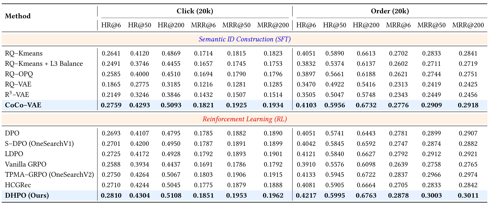
Table 1 的上半部分比较不同 SID 构建方法在 SFT 下的表现，下半部分把所有策略优化方法初始化为 CoCo-VAE，因此两个区块回答的问题不同。上半部最强 RQ-Kmeans 的 Click HR@6 为 0.2641，CoCo-VAE 为 0.2759，相对提升约 4.47%；Order 为 0.4051 到 0.4103，提升约 1.28%。Click HR@200 从 0.4869 到 0.5093，Order 从 0.6613 到 0.6732。下半部 DHPO 的 Click HR@6 为 0.2810，TPMA-GRPO 为 0.2750，差值 0.0060，相对提升 2.18%；Order 为 0.4217 对 0.4133，提升约 2.03%。这说明小幅增益仍有意义，但不能写成翻倍提升。两种行为的难度不同，Order 数值更高不代表订单行为更容易在现实中发生，它们对应不同条件下的正例测试集。
完整主表还保留了不支持简单口号的现象。RQ-Kmeans 加第三层平衡后，Click HR@6 下降到 0.2491，HR@200 到 0.4455；RQ-OPQ 在该设置也未优于普通 RQ-Kmeans。因而“码本更均匀就一定检索更好”不成立，量化必须同时维持业务相关的语义结构。普通 RQ-VAE 的 Click HR@6 只有 0.1865，R3-VAE 为 0.2149，CoCo-VAE 对它们改善较大，但论文没有用独立码本利用率、熵或碰撞率表逐项证明所有变化路径，检索结果支持整体配方，不能把每种机制的中间变量改善都当成已测事实。
DHPO 的 Click MRR@6 为 0.1851，对 TPMA 的 0.1803 相对提升 2.66%；Order 为 0.2878 对 0.2837，提升 1.45%。更深截断处，Click HR@200 为 0.5108，对 SFT 的 0.5093 只是增加 0.0015，Order 为 0.6763 对 0.6732，也只是增加 0.0031。这体现策略更新更明显地把有效商品移向列表前端，而不是大幅扩大两百候选的总覆盖。论文对 DPO 退化提出共享前缀梯度冲突和奖励投机等解释，但未给出对应梯度诊断，应该把这些看成作者的机制解释，证据强度低于表中可直接核对的指标。
主结果需要同时看绝对差和相对提升。以 Click HR@6 的 0.0060 差为例，它等于测试集中约 0.6 个百分点的命中变化，相对百分比才是 2.18%；两种写法都正确，但分母不同。在两万测试交互上，这个差对应约一百二十条命中交互的量级，属于按公布均值推算的直观数量，并非作者给出的逐样本显著性统计。MRR 又依赖正例出现的位置，不能把 MRR 差值直接换算为新增命中人数。论文离线主表没有误差条、多随机种子均值或配对显著性检验，这不推翻点估计，却限制了对微小差值稳健性的判断。评估迁移时应保存逐查询结果，以配对方式核对这些浅层改善能否在另一天复现，避免只挑一个测试日的最优数字。
3.2 模块消融
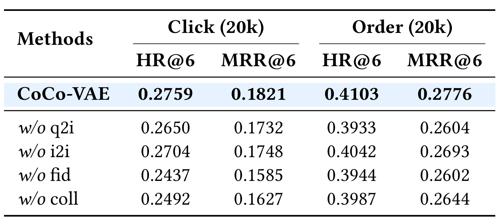
Table 2 以完整 CoCo-VAE 的 Click HR@6 0.2759、Order 0.4103 为参考。去掉 Q2I 后分别变成 0.2650、0.3933；去掉 I2I 后为 0.2704、0.4042；去掉保真为 0.2437、0.3944；去掉碰撞正则为 0.2492、0.3987。Click 上保真和碰撞移除损失较大，Order 上 Q2I 移除损失明显，说明两个行为目标并非简单共享同一组件敏感度。MRR 同方向退化也支持相关商品的排序受到影响。表里没有单独删除第一层 Codebook Refresh 的一行，也没有“只保真”或“只碰撞”的完整组合搜索，所以不能从这张表精确量化刷新独立贡献，或认为两个损失的贡献可线性相加。从业务含义看，查询与商品的协同约束更直接对应搜索意图，商品间协同约束则提供补充的行为关联；移除二者都退化，支持保留两种关系。保真和碰撞的结果需要联合解读：前者维护残差语义，后者防止分配集中，单独保留任一项都未达到完整模型。这里只能比较当前权重与数据下的敏感度，不能推导某个组件在所有搜索业务里都更重要。
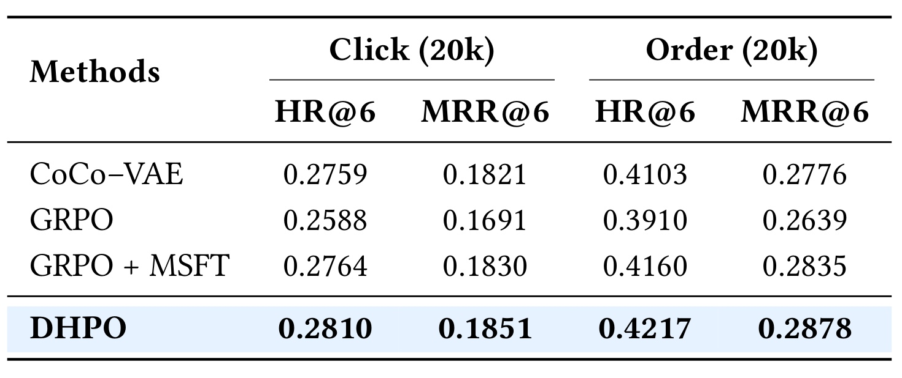
Table 3 把“普通 GRPO 会退化”“监督正则能恢复”“动态视野还能继续提高”三层证据分开。Click HR@6 从 SFT 0.2759 降到 GRPO 0.2588，加入 MSFT 后回到 0.2764，最终 DHPO 为 0.2810。Order 对应 0.4103、0.3910、0.4160、0.4217。MSFT 自身已贡献明显恢复，尤其 Order 已超过 SFT；DHPO 相对 GRPO+MSFT 的新增绝对值为 Click 0.0046、Order 0.0057。最终模型并非无监督的纯强化学习，不能把全部收益只归因于前缀课程。该消融也未分别固定奖励视野与更新视野，因此对“两者必须同步”的支持主要来自目标设计及整体 DHPO 优于静态方案，尚缺更细的正交消融。这个逐级对照特别适合判断是否值得增加训练复杂度：先确认监督正则是否已经解决主要退化，再观察课程机制提供的额外改进。订单列在加入监督后比点击列恢复得更明显，说明行为价值目标和稀疏程度可能影响策略表现；表格没有报告每组非零奖励比例，因而不能仅凭指标反推出两类行为究竟哪一种奖励更稀疏。
3.3 候选替代、业务收益与资源
在线 A/B 的明确日期是 6 月 22 日到 8 月 4 日，包含首尾约 44 天。摘要称为“两个月”，读者应优先使用具体日期，不把它扩写成连续完整两个月。V1.0 增加 WeGR 渠道并保留所有传统候选；V1.1 删除传统渠道贡献的 60% 候选；V1.2 删除 80%，仍保留 20%。这些比例针对传统渠道候选贡献，不是直接针对总候选量，也不等于关停 80% 的检索渠道。
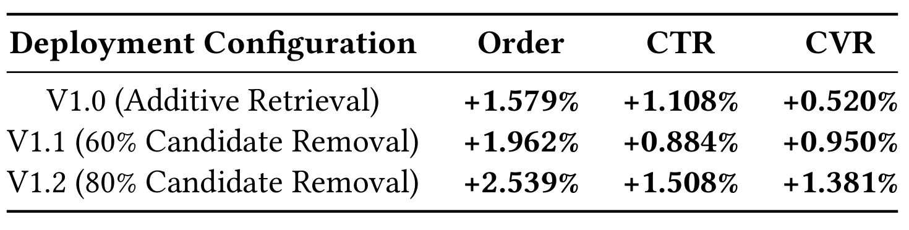
Table 4 的数字均为相对生产基线的变化，论文报告三项指标显著性 $p<0.05$。V1.0 订单、CTR、CVR 分别提升 1.579%、1.108%、0.520%；V1.1 为 1.962%、0.884%、0.950%；V1.2 为 2.539%、1.508%、1.381%。候选替代越多并非每项逐级单调：V1.1 的 CTR 收益低于 V1.0。最强 V1.2 同时提升业务与减少后续候选处理，是这组实验最有工程价值的结果。但控制组原始订单量、流量比例、置信区间、分流及多重检验细节未完整给出，不能据百分比计算新增订单绝对量，也不能把显著性扩展为跨季节保证。三种配置的共同点是都保留生成式渠道，变化在于传统候选的保留量，所以这组对照检验的是召回组合替代效果，不是生成模型和完全无检索系统的比较。较少候选仍取得订单收益，说明简单扩容候选并非收益的必要条件；但缺少固定候选规模下的模型对照，不能据此把全部收益精确拆成候选去冗余与生成模型质量两部分。
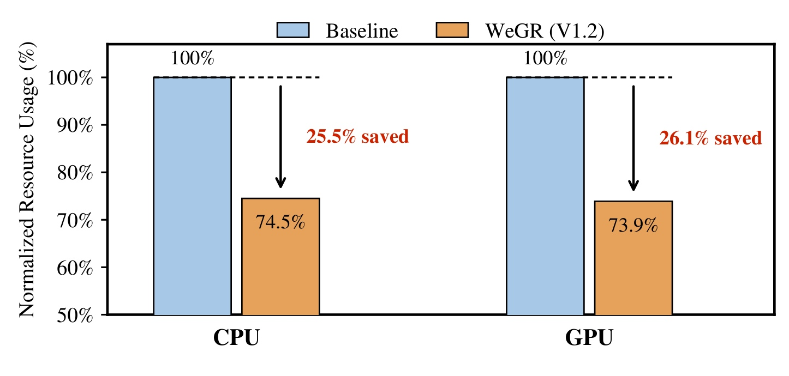
Figure 3 的基线归一化为 100%，V1.2 的 CPU 为 74.5%、GPU 为 73.9%，对应节约 25.5% 与 26.1%。与此相关的另一个分母是送入预排序的候选数，V1.2 为基线的 61.90%，即减少 38.10%。传统候选删除 80%、总预排候选减少 38.10%、CPU 和 GPU 用量减少约四分之一，三个数字描述不同对象。作者解释资源变化小于候选变化，是检索、请求处理及其他服务仍有固定开销。这支持通过高质量召回降低下游逐商品打分量的系统路径，不意味着生成模块本身不消耗资源，也不能写成整体省下 80% 算力。图中的归一化资源没有提供单次请求绝对 GPU 时长或机器型号。
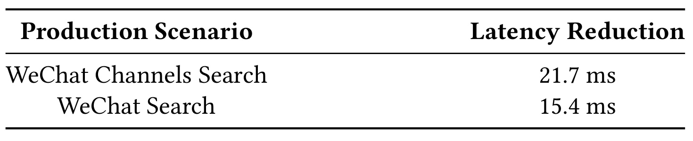
Table 5 报告视频号搜索平均在线时延降低 21.7 毫秒，微信搜一搜降低 15.4 毫秒。作者将其主要归因于进入预排的候选减少，因而逐商品特征处理及模型推理开销降低。这与 Figure 3 的资源路径相互支持，但表里没有各场景原始平均时延，也没有 p95、p99，因此只能讨论平均绝对毫秒改进，无法推导相对时延百分比或尾延迟保证。两个场景结果说明资源优化存在跨服务收益，不过不能把该表自动等同于电商 Table 4 的同一分流实验或完整 WeGR 在每个新场景的业务 A/B。平均值改善还可能受到请求组成和并行链路耗时的影响，因此两个场景的毫秒差不能直接排成模型效率高低。若要验证预排减量的归因，需要同口径保留各阶段耗时与候选规模，而不是只测端到端均值；这是后续验证条件，原表没有提供这些分项测量。
3.4 时间趋势、人群与查询频率
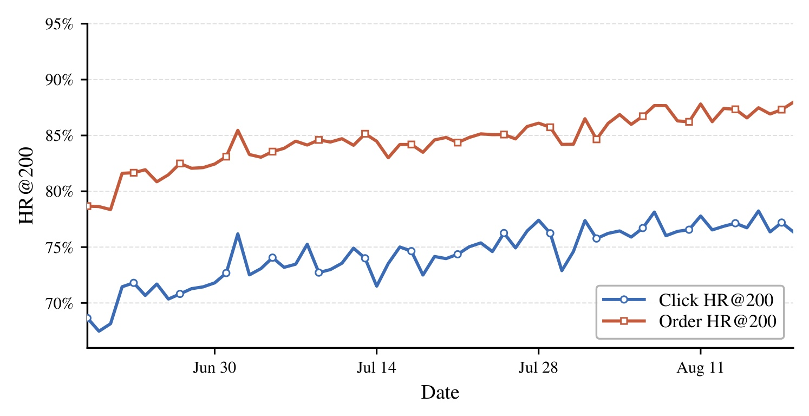
Figure 4 记录每日 Click 与 Order HR@200 的变化。正文给出首七日与末七日均值：Click 从 69.98% 到 76.99%，Order 从 80.24% 到 87.29%。曲线整体上升且有日间波动，支持系统在这段部署过程中没有出现明显持续恶化。这里是随日期变化的监控样本与持续日更训练，并不是 Table 1 固定 20000 条测试交互上的重新评估，因此 76.99% 与 0.5108 不可直接比较，更不能声称在同一 benchmark 中从 51% 涨到 77%。没有固定模型的同期对照、相同查询分布和样本量分解，这条趋势也不能单独证明持续训练是改善的唯一原因，季节、商品、用户及流量变化都可能参与。首末七日平均的比较减少了单日尖峰影响，但没有消除两个时间窗口的流量差异。图中订单曲线始终高于点击曲线，也只能说明各自正例口径下的召回覆盖不同，不能换算成订单用户更满意或订单发生概率更高。
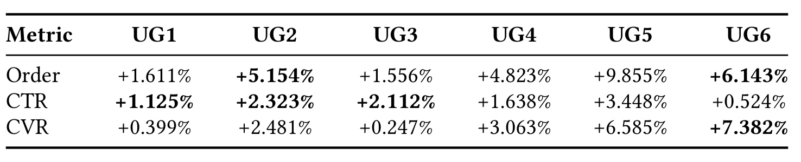
Table 6 的 UG1–UG6 依次是活跃老用户、召回老用户、流失老用户、活跃新用户、召回新用户和流失新用户。六组指标点估计均为正，其中 UG5 订单提升 9.855%、CTR 提升 3.448%，UG6 的 CVR 提升 7.382%；UG4 订单为 4.823%、CVR 为 3.063%，UG1 则分别为 1.611%、0.399%。因此整体收益不是只来自活跃老用户，稀疏或变化历史的人群值得重点检查。可是群体样本占比、原始转化基数未公开，较大的相对提升不一定贡献最多的绝对订单；表中显著性由粗体表示，不能仅因为每个单元格为正就宣布每组每项都显著改善。协同语义是否真的修复了历史稀疏，需要额外受控实验。
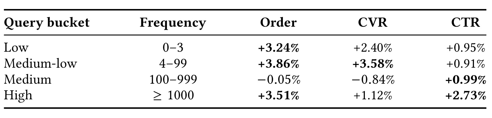
Table 7 按历史频次分为 0–3、4–99、100–999 和至少 1000。低频订单提升 3.24%，中低频订单与 CVR 提升 3.86%、3.58%，高频订单与 CTR 提升 3.51%、2.73%。中频 CTR 为 +0.99%，但订单 −0.05%、CVR −0.84%，且后两项未达到表中显著性标记。这个中段结果提醒我们点击改善不能自动外推成转化改善，论文并没有所有查询桶全面大幅获益的结论。作者认为长尾的协同语义迁移与头部充足行为信号都可能发挥作用，同时明确异质收益的精确机制还需要控制研究。迁移到其他产品时，频次窗口与样本构成也要一致，否则同样的四桶阈值未必代表同样业务难度。
3.5 直播搜索的独立迁移
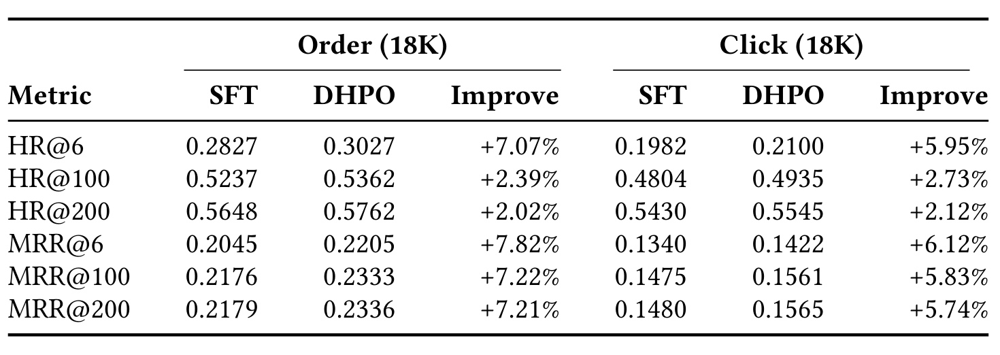
Table 8 在微信电商直播搜索分别用 Order 和 Click 各 18000 条样本做独立评估。订单 HR@6 从 SFT 0.2827 到 DHPO 0.3027，提升 7.07%；点击从 0.1982 到 0.2100，提升 5.95%。订单 MRR@6 从 0.2045 到 0.2205，提升 7.82%；点击从 0.1340 到 0.1422，提升 6.12%。浅层更明显，深层也有增益：Order HR@200 为 0.5648 到 0.5762，Click 为 0.5430 到 0.5545；MRR@200 分别相对提升 7.21% 和 5.74%。这表明偏好优化能让正例更靠前，但实验隔离的是 DHPO 策略阶段，参考是各自 SFT 初始化，所以不能据此说完整 WeGR 的码本和服务架构已经无改动跨域迁移。
总体证据把小幅离线改进、在线业务改善与链路资源变化连接在一起。离线显示 CoCo-VAE 改善标签结构、MSFT 减少策略退化、DHPO 在此之上继续改善前端命中；在线则说明较少传统候选仍能获得正的业务收益。两条证据并不完全等同：主表的 HR 和 MRR 是带正例测试集，A/B 的 CTR 和 CVR 是真实流量指标，资源统计又是服务成本。因此它们共同支持部署价值，却不能相互替换分母，也不能从单一离线百分比精确预测订单增幅。复现或落地时应保持这种指标层次，而不是用一个“效果提升”掩盖不同实验。
4. 总结
WeGR 最值得留下的是把“行为相关的离散层次”和“与层次一致的信用分配”合在同一工业检索设计中。CoCo-VAE 通过 Q2I/I2I、第一层刷新、残差保真与跨样本碰撞约束，避免只追求协同关系而挤压码本，也避免只追求均匀而失去商品区分。DHPO 沿 SID 深度扩大奖励和更新视野，MSFT 用完整多正例监督保住稀疏组的梯度。它的主骨干是 GPT-2 Small，增益来自任务表示与训练机制，论文并未验证模型越大越好。部署结果也表明召回质量应放进下游候选成本一起评估，最高 HR 的方案未必自动对应最佳服务方案。
对推荐与搜索研究的迁移价值有两个层次。表示层可以检查当前 SID 前缀是否保留行为相似性，而不只检查内容向量重建误差；策略层可以统计全零组、等值组和各层前缀命中率，判断静态精确奖励是否导致无效训练。若业务已经有多兴趣正例，MSFT 是独立值得对照的稳态基线，不能直接跳到复杂课程后把收益全归因于 RL。对广告任务，点击和转化有归因延迟、价值尺度及曝光偏差，本文的 1/2 奖励不能原样照搬成收入优化目标。适用前提是行为标签可信、SID 层次有意义、日更模型与商品映射一致。
这篇论文至少有四个需要保留的边界。第一，训练与测试依赖微信私有日志，编码器细节和所有采样参数未完全公开，公开条件下无法独立确认收益可重复性。第二，量化消融没有单独隔离刷新，也缺利用率、熵与碰撞率的完整中间变量曲线，对防坍塌机制的细粒度证明有限。第三，DHPO 没有拆开奖励视野和更新视野的正交消融，MSFT 已贡献部分恢复，不能把最终收益理解为课程单独的贡献。第四，A/B 提供显著性和具体日期，但缺样本量、置信区间、原始业务基数与完整分流细节；44 天窗口无法证明全年稳健性。第五，跨域结果只验证策略阶段，商品增删、词表日更切换与服务尾延迟仍需要独立工程验证。
后续跟进可以从三个明确实验着手：其一，在相同骨干和样本预算下记录每层码本利用率、有效码字数和完整 SID 碰撞，再分别删除刷新、保真和碰撞正则，检查检索提升是否对应所声称的中间机制。其二，将静态全长奖励、只缩短奖励窗口、同步缩短奖励与更新窗口以及不同阶段步数做并列对照，同时固定 MSFT 和 rollout 数，统计有效优势比例及深层命中变化。其三，以同一真实流量分流预算做候选保留比例扫描，联合报告订单、候选量、CPU/GPU、均值与尾延迟，并按新老用户和查询频次分层。若这些观察能复现，才更有把握决定是否替代现有召回配额；本文的结果足以支持研究方向，但不足以替任何产品给出确定的上线承诺。